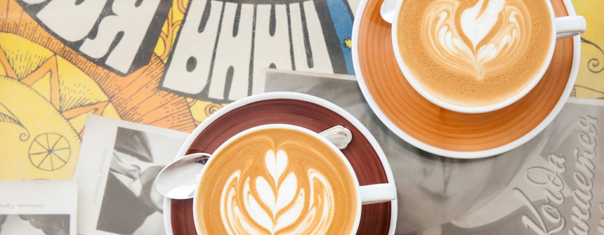
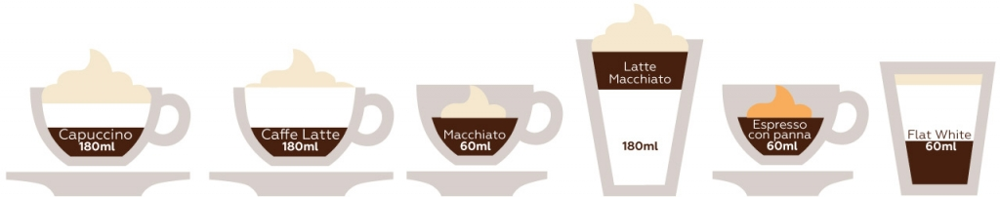

Види кави та кавових напоїв - назви і опис
У зв'язку з настанням зими давайте пробіжимося по каві і кавових напоях. Ні, ніяких «біблій», «енциклопедій» і «все про каву». Просто актуальна кава в чашці, шорт-лист. Освіжаємо в пам'яті основні види та типи, тримаємо в думці свіжообсмажені зерна і їх помол безпосередньо перед приготуванням.
Кава по-турецьки
Три з гаком сотні років це був основний і практично єдиний вид кавового напою, ніколи не ставимо його ні на яке місце, крім першого. Детальніше про нього і його національні різновиди тут. Можна більш уважно поставитися до спецій, зараз саме час перевірити їх профілактичні властивості.
Напої на основі Еспресо
Це не дуже велика група напоїв, але кожен тип займає свою нішу і по-своєму популярний. Не кожні 30 мл кави можна назвати Еспресо, а тільки ті, які отримані перколаціею 7 ± 0,5 г меленої кави водою з температурою 88 ± 2⁰С, під тиском 9 ± 1 бар, в перебігу 25 ± 5 сек. У чашці повинно бути 25 ± 2,5 мл. Обсяг 30 мл вказується для маркування через американську рідинну унцію(fl oz) = 29,573 531 мл
| №1 | Назва | V, мл | Примітка |
|---|---|---|---|
| 1 | Espresso | 25±2,5 | Стандарт |
| 2 | Ristretto | 17 | Перколація з меншою кількістю води |
| 3 | Lungo | 60 | Перколація з в 2 рази більшою кількістю води |
| 4 | Doppio | 60 | Два Еспресо в одну чашку |
| 5 | Americano | 90 | Еспресо + 60 мл гарячої води |
| 6 | Espresso Romano | - | В Римі та Італії про неї мало хто чув. Щось з лимоном |
- Еспресо
- - основний напій, гострий камінь сьогоднішньої кавової культури.
- Створення ідеального Еспресо
- - це ключ до створення ідеального кавового напою.
- Рістретто
- - це прояв особливої поваги до людини і визнання її здатності оцінити каву.
Це не економія води, як дехто може подумати. - Лунго
- - з італійської точки зору сумнівний вибір, тому що є Доппіо.
- Доппіо
- - правильний вибір, ви - людина з характером.
- Американо
- - якщо багато років користуватися виключно крапельною кавоваркою, то, мабуть так.
| №1 | Назва | V, мл | Espresso,доля або V | Молоко | Молочна піна | Збиті вершки |
|---|---|---|---|---|---|---|
| 1 | Capuccino | ≥180 | 1/3 | 1/3 | 1/3 | - |
| 2 | Caffee Latte | ≥180 | 1/3 | 2/3 | небагато | - |
| 3 | Machiatto | 60-90 | 30-60 мл | - | 15-20 мл | трішки |
| 4 | Latte Machiatto | ≥180 | 30-60 мл | до повного | до повного | - |
| 5 | Espresso con panna | 60-90 | 30-60 мл | - | - | трішки |
| 6 | Flat-White | ≥140 | 47-60 мл | 2/3 | небагато | - |

Капучино подають присипаним шоколадом або какао-порошком, його товстий шар піни - ідеальне полотно для художника, що використовує сиропи, соуси, порошки, горіхи і т.п. Прекрасний початок дня.
Кофе Лате, або просто Лате, означає «кава з молоком» або «кавове молоко». Напій з явним переважанням молока над кавою.
Макіато і Лате макіато докладно тут. Буквально означає «плямистий». Макіато найпростіший кавовий напій з молочною піною, а Лате макіато цікавий досить рідкісним розташуванням кави між молоком і молочною піною.
Еспресо кон пана еспресо з вершками. Еспресо або Допіо повністю або частково накриваються збитими вершками з додаванням цукру, екстракту ванілі. Подається в Демітасе ( «півчашки»).
Флет-Уайт, «плоский-білий», нагріте молоко створює оксамитову рівну поверхню з молочної піни. По компонентах можна порівняти з Лате, але менше за обсягом і з меншою кількістю піни, тому має більш високу частку кави в напої. У бекграунді цей тип має репутацію невдалого Капучино.
Гарячі кавові напої з алкоголем
Нагадаємо, ми переглядаємо зимове меню, основне завдання кавового напою - максимально комфортно зігріти змерзлого людини. До складу цього виду напоїв підбирається гарячу каву «до повного», який займе основну частину в келихах місткістю 180, 240, 300 і навіть 400 мл, тому еспресо поступається місцем іншим способам приготування.
Irish Coffee
- 40 мл хорошого ірландського віскі;
- 2 чайних ложки коричневого цукру Демерара;
- гаряча кава;
- плаваючі зверху важкі щільні вершки.
Coffee Toledo
- 25 мл лікеру «Kahlua»;
- 25 мл лікеру «Baileys»;
- 10-15 мл шоколадного сиропу;
- гаряча кава;
- плаваючі зверху важкі збиті вершки.
Caribbean Coffee
- 25 мл лікеру «Malibu»;
- 25 мл лікеру «Amaretto»;
- гаряча кава;
- плаваючі зверху важкі збиті вершки.
Coffee Амоrе
- 15 мл коньяку «Hennessy»;
- 25 мл лікеру «Amaretto»;
- гаряча кава;
- плаваючі зверху важкі збиті вершки.
Coffee Irish Nut
- 25 мл лікеру «Baileys»;
- 25 мл лікеру «Frangelico»;
- гаряча кава;
- плаваючі зверху важкі збиті вершки.
Основні моменти приготування в усіх випадках однакові:
- 30 секунд прогріти келих гарячою водою, злити;
- покласти цукор, там де він є;
- залити алкогольні інгредієнти в келих;
- додати кави до рівня нижче 20 мм краю келиха;
- ретельно розмішати;
- акуратно викласти на каву вершки, домогтися чіткого візуального контрасту шарів
Нам здається, що не варто відразу прагнути до вивчення і приготування великої кількості напоїв. Кавові зерна не люблять квапливість і недбайливість. Тут точно якість важливіша за кількість, і світові кавові чемпіонати підтверджують, наскільки тонкий і глибокий цей вид мистецтва.
Каву не можна не любити, до неї потрібно ставитися з повагою. Це один з небагатьох справжніх друзів, які завжди з вами.